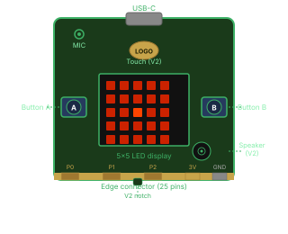
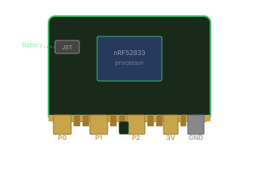
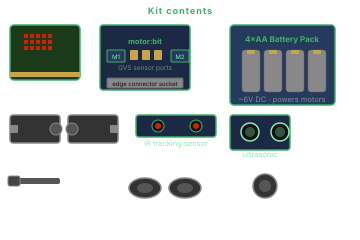
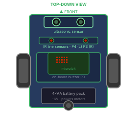

A credit-card-sized microcontroller with built-in sensors, a 5×5 LED display, wireless radio, and a 25-pin edge connector. Designed for school use. Programmable in drag-and-drop blocks or Python from any browser.
60+
countries using it
~$30
AUD per board
2
languages: blocks + Python
0
hardware needed to start
Overview
What is the micro:bit
The micro:bit was developed by the BBC and the Micro:bit Educational Foundation for use in schools. It is a small, low-cost microcontroller with built-in sensors and outputs. It supports two programming languages in the same browser-based editor, with no software to install.
micro:bit V1Original
5×5 LED display
2 buttons (A and B)
Accelerometer and compass
Temperature and light sensing
2.4 GHz radio and Bluetooth
25-pin edge connector
USB and JST battery connector
micro:bit V2Current
Everything in V1, plus:
Built-in microphone
Built-in speaker
Capacitive touch logo (third button)
More RAM and flash storage
Power LED and reset button
Backwards compatible with all V1 accessories
Which version do you have? Look for a notch cut into the gold edge connector at the bottom of the board. V2 has it; V1 does not. Both work with the same MakeCode editor and the same accessories.
On the board
Built-in sensors and outputs
The micro:bit has sensors and outputs soldered onto the board. With only the board and a USB cable, a student can detect movement, read temperature, transmit data wirelessly, and show output on the LED display — no additional components required.


5×5 LED display
25 red LEDs, each individually controllable. Shows text, numbers, icons, and animations. Also acts as a light sensor when not displaying.
Output + Input
Buttons A and B
Physical pushbuttons on either side of the board. Detect press, release, and hold. The primary way a user interacts with a running program.
Input
Accelerometer
Measures movement and tilt across three axes. Detects gestures: shake, tilt, freefall. Reads the board's angle in any direction.
Input
Compass
Measures magnetic field direction. After calibration, gives a compass bearing. Useful for navigation, detecting magnetic objects, and orientation projects.
Input
Temperature sensor
Reads the CPU die temperature, which approximates ambient temperature. Good enough for weather logging, thermostat projects, and science experiments.
Input
Radio (2.4 GHz)
Send and receive short messages between micro:bits, up to 70 m in open space. Enables multi-device projects: games, remote controls, sensor networks.
Input + Output
Microphone (V2)
Detects sound level, clap patterns, and loud/quiet events. Opens up music-reactive projects, sound-triggered automations, and noise monitoring.
V2 only · Input
Speaker (V2)
On-board buzzer that plays tones, melodies, and effects without any extra hardware. Controlled with the music blocks in MakeCode or Python's music module.
V2 only · Output
Edge connector
25 gold pads at the bottom: analogue, digital, I2C, SPI, and power pins. Connect motors, servos, extra sensors, and carrier boards. Crocodile clips work on the large pads.
Extension
How you code it
Programming the micro:bit
Programming is done through a browser at makecode.microbit.org. No software installation is required. The editor supports drag-and-drop blocks and text-based Python in the same interface, and includes a simulator so students can test their programs before connecting hardware.
The browser simulator
MakeCode includes a micro:bit simulator that runs in the browser. Students can test button presses, shake events, LED output, and sensor readings without connecting hardware. Lessons can proceed before any boards arrive.
Drag-and-drop visual programming. Blocks snap together and colour-code by category. Code is always syntactically valid: no curly braces, no semicolons, no error messages about missing brackets.
No typing required to get started
Instant feedback in the browser simulator
View the equivalent JavaScript any time
Same editor as MicroPython
MicroPythonStep up
Standard Python running on the board. The same language used in GCSE, VCE, and undergraduate computing courses. Students can move from blocks to Python on the same board, in the same editor, without additional cost.
Transferable skill: Python is the most-used language globally
Access to lower-level hardware control and timing
Works in MakeCode or the dedicated Python editor
Same board, no additional cost
Downloading to the board: clicking "Download" produces a .hex file. Drag it onto the MICROBIT USB drive that appears when the board is connected and the program loads automatically. No drivers or additional software needed. Works on Windows, Mac, and Chromebook.
Versatility
What you can actually build with it
The micro:bit is not a single-purpose kit. The same board and the same skills span science, art, sport, music, and engineering. That cross-subject range is the reason it is worth learning: one platform, many entry points, no throw-away knowledge.
Robotics
Line-following robot
Add a motor carrier board and IR sensors. The micro:bit reads the line and drives two motors independently for full autonomous navigation.
MotorsIR sensorsAutonomous
Science
Wireless weather station
Log temperature over time and transmit readings wirelessly to a second micro:bit acting as a base station display. No internet connection required.
TemperatureRadioData logging
Wearables
Step counter
The accelerometer detects footfall patterns. Display step counts on the LED, set daily targets, and vibrate when reached. Worn on a wristband or sewn into a bag.
AccelerometerLED display
Music
Clap-activated instrument
The V2 microphone detects clap patterns. Different rhythms trigger different notes from the on-board speaker. No extra components needed at all.
MicrophoneSpeakerV2
Games
Two-player radio game
Two micro:bits communicate over radio. One sends, the other receives and responds. Rock-paper-scissors, quiz buzzers, collaborative scoreboards.
RadioMulti-board
Environment
Plant monitor
Connect a capacitive soil moisture sensor via the edge connector. The micro:bit alerts when plants need water with a wilting icon or a buzzer pattern.
Edge pinsAnalogue input
Safety
Crash detector
Detects freefall or a hard impact via the accelerometer. Displays an alert and transmits a radio message. Works as a bike safety device or fall-detection aid.
AccelerometerRadio
Art
Sound-reactive LED display
LED animation responds to ambient sound level or light intensity in real time. No screens, no apps — the board itself becomes the display.
Light sensorLED display
For teachers
Why it works in a classroom
The micro:bit was designed for school use. These are the features that make it practical in a classroom with varied hardware, limited IT support, and students at different levels.
01
No hardware needed to start
The browser simulator lets students write and test code before any boards arrive. Classes can begin as soon as students have a laptop.
02
Low cost and durable
Around $30 AUD per board. The LED display shows program state directly, which helps students debug without external tools. The board tolerates being pocketed, dropped, and used across multiple year groups.
03
Two-language progression
Students start with drag-and-drop blocks and can switch to Python later on the same board and in the same editor. No new hardware or platform is required to make that transition.
04
Visible program state
The LED display shows what the program is doing without needing a monitor or serial connection. Students can see whether their code is running correctly and where it is failing.
05
Covers multiple subjects
The same board is applicable across Computing, Science, Maths, Music (V2), and Design Technology. One purchase can serve multiple departments and year levels.
06
Works on school computers
MakeCode runs in a browser with no installation and no admin rights. It works on Chromebooks, older Windows laptops, and iPads. Uploading a program is a file drag onto a USB drive.
Real-world context
RoboCup Junior Rescue Line
The skills covered in this workshop apply directly to RoboCup Junior Rescue Line. The competition gives students a concrete goal that uses line following, sensor reading, and motor control together in a timed autonomous run.
RoboCup Junior Australia: Rescue Line
An autonomous robot navigates a black line, avoids obstacles, climbs ramps, and rescues a victim from a chemical spill. 120 seconds. Scored on every element it completes.
120
seconds per run
micro:bit capability
What it does in the competition
IR tracking sensors (via carrier board)
Reads the black line on the white tile; the robot follows it autonomously
Ultrasonic sensor (via carrier board)
Detects obstacles ahead; triggers avoidance and locates the rescue capsule inside the spill
DC motors (via carrier board)
Drives two wheels independently for straight lines, turns, and ramp climbs up to 20°
Button A + downloaded program
The Robot Handler presses a button to start the run. Competition rules require this; no laptops at the field
LED display
Shows the robot's current state during the run; referees and coaches can see what the robot is "thinking"


The kit: Individual components — a micro:bit, an Elecfreaks motor:bit carrier board, two TT motors, a 2-channel IR tracking module, an ultrasonic sensor, and a 4×AA battery pack. The carrier board plugs directly onto the micro:bit edge connector.
Coding reference
Setting up and writing your first programs
A reference to keep open during the live coding session. Setup steps, wiring, program structure, and the three programs that make up a Rescue Line robot — each with an embedded MakeCode project you can open, run, and remix directly.
Search for motorbit and add it — this gives you motor control blocks.
Search for sonarbit and add it — this gives you the ultrasonic sensor block.
You should now see motorbit and sonarbit categories in the block palette.
Sharing a project: once you have working blocks, click Share in the top menu. Copy the URL it gives you (looks like https://makecode.microbit.org/S12345-abcde). Paste that URL as makecode_url: in the matching section of content/07-code.md and it will embed live on this page.
Pin and wiring reference
Connection
Pin
Notes
Left motor
M1
TT yellow motor — left wheel
Right motor
M2
TT yellow motor — right wheel
Left IR sensor (S1)
P4
Digital. 0 = on the line, 1 = white background
Right IR sensor (S2)
P3
Digital. 0 = on the line, 1 = white background
Ultrasonic sensor
Free GVS port
Set in MakeCode to match physical wiring
Buzzer
P0
On-board — no wiring needed
Sensor logic note: the IR sensors return 0 when they see the black line and 1 when they see white. This is the opposite of what you might expect. Use the set pull up block on P3 and P4 inside your on start block.
Program structure: what goes where
Block
When it runs
Use it for
on start
Once, when the board powers on
Set pin pull-ups, show a ready icon on the LED
forever
Continuously in a loop
Read sensors, decide direction, drive motors
on button A pressed
When the handler presses Button A
Start the run — required by competition rules
on button B pressed
When Button B is pressed
Emergency stop or toggle calibration mode
The autonomy rule: two things to remember
Rule 3.2.1 — Button start: the program must be downloaded to the robot before the run. The Robot Handler starts it by pressing a button on the board. No laptop, no remote, no phone.
Rule 3.2.2 — No wireless: Bluetooth and radio must be off during a run. MakeCode blocks mode does not add radio by default, so you are fine as long as you do not add a radio block.
Part 1: Line following
Read the two IR sensors and steer the robot to stay on the black line. This is the core loop that runs for the whole course.
MakeCode project — Line following
Create your line-following MakeCode project, click Share, and paste the URL above as makecode_url:
Part 2: Obstacle avoidance
Use the ultrasonic sensor to detect an obstacle ahead, drive around it, and reacquire the line within 30 cm.
MakeCode project — Obstacle avoidance
Create your obstacle avoidance MakeCode project, click Share, and paste the URL above as makecode_url:
Part 3: Push rescue
Detect the silver capsule inside the chemical spill zone and push it clear. Worth 50 points — the single highest-value action in the scoring.
MakeCode project — Push rescue
Create your push rescue MakeCode project, click Share, and paste the URL above as makecode_url: